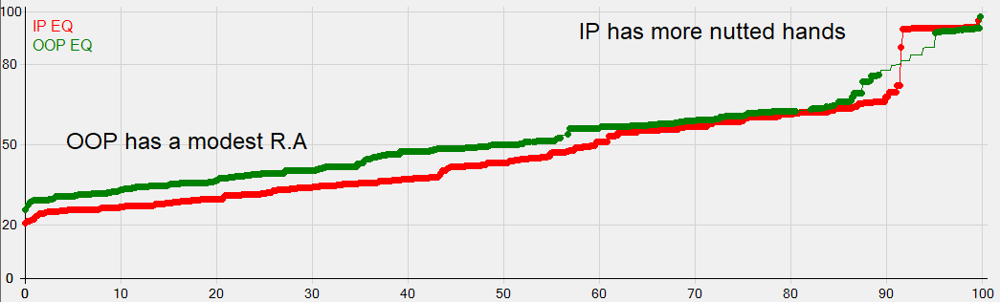

Node occurs in position after the pre-flop aggressor checks the flop.
The most common float bet opportunity occurs BB vs SB in a single raised pot.
As always, when we're building a betting range that is not 100% of our landing range we will deploy a bit of polarisation to our investment strategy.
Betting hands from the top down and shying away from low EV bluffs which are staple of a betting range in all spots which are not HORRIBLE for range.
Auto Betting every draw even though most will simply be indifferent between betting and checking in theory.
Focussing too heavily on the breanches in the tree where we get outdrawn and failing to protect our checking range as a result. Checking behind ranges in float bet opportunities are some of the most unprotected in the whole game tree so good players will expect this leak.
When the preflop raiser checks the flop he tends to maintain some range advantage but nut advantage might decrease somewhat.
This means that IP will want to bet only semi-frequently but with a large sizing when he does bet.
Let's look at the range vs range equity graph on this board.
On the flop there is still a lot of time left in the hand and equities are far from their final resting place.
These so called young equities are likely to run quite close together, meaning that when one player is ahead they are unlikely to be as far ahead as they would be with older equities on the turn or river.
On low flops, equities run even closer together because the player who is behind almost always has significant redraw against the non nutted region of the equity leader's range
On the flop, especially low ones, it is usually possible to bet a variety of hands for all three purposes: Value, Bluff and Denial.
On low neutral flops all equity classes can be bet as a float bet. This is because there is always a large boost of denial to get and this pushes thinner value bets and flimsy bluffs over the line of being optional bets.
But contrast this to a higher flop where equities run further apart. Now when you are ahead you are often very far ahead or your opponent has too much equity to fold anyway (flush draws etc). On these high flops we will simplify again to a strategy of infrequent big bets because we have N.A but not R.A after OOP checks.
The strategy we play on this flop is semi-polarised. This means that while we bet the more polarised hands at a higher frequency we do still bet many depolarised hands too since denial is so prominent here.
The strategy we play on this flop is fully-polarised. The betting frequency is much lower as the texture is less favourable for us and there is less denial to gain by betting. Note here that the N.A is a little smaller so the solver is a little torn between bet-sizes. We will simplify to B75 only here as it fits our framework for this spot more cleanly.
The key to an orderly and logical thought process in these spots (and many others) is to remind yourself roughly how your range will play (divide itself) and then ask how your hand fits in to this blueprint. Let's practice this exercise.
Let's say that we call a 3Bet on the BU against the SB and the flop comes low. SB checks to us. What is the Nut Advantage situation now?
As the range denser in pocket pairs and less dense in unpaired holdings , we naturally wield a bit of as range advantage here. This allows us to bet quite often and quite merged.
But as we have a large nut disadvantage (missing the overpairs that SB has often in a 3BP and can choose to check on the flop), we will have a large nut disadvantage. This keeps our sizing small.
If the board is less favourable for us and higher then we do not gain much denial by betting small and thin for value. In this case, we want to save our betting for clear value bets and bluffs.
Note how little we would gain now by betting some mediocre hand like 99 or TT. These bets would be to thin for value and would not gain much protection since Villain is only folding hands that are very dead anyway like Ah4h.
Thus we build a very high equity value range which allows us to use only large bets. We do a lot of checking behind here.
Now our bets can be clearly distinguished between value and bluff. The equity of the hands we bet is either very high or quite low (apart from some draws).